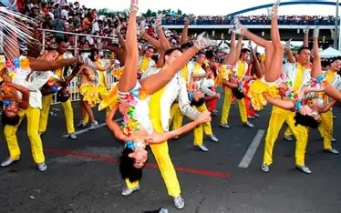
Música
El currulao, la salsa y los cantos del Pacífico llevan huellas profundas de la tradición musical afrocolombiana.
Tradición, identidad y diversidad del Valle del Cauca
Un recorrido por los sonidos, sabores, tradiciones, personajes y paisajes que hacen única a la cultura valluna.
El Valle del Cauca se ubica en el suroccidente de Colombia, entre la Cordillera Occidental y la Cordillera Central, con salida directa al océano Pacífico. Esta combinación de montaña, valle fértil y costa es la base física de su diversidad cultural.
La identidad cultural del Valle del Cauca se ha formado a lo largo del tiempo a partir del encuentro de distintas comunidades y experiencias históricas.
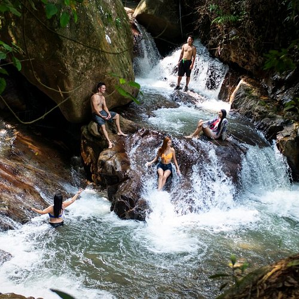
Comunidades originarias que habitaron el territorio antes de la llegada española y que dejaron huellas en la toponimia y el conocimiento del entorno.
Llegada durante la Colonia, influyó en la fundación de ciudades, la lengua y algunas costumbres que se transformaron con el tiempo.
Aportes fundamentales en música, danza, gastronomía y tradiciones, especialmente en la región del Pacífico y Buenaventura.
Han sostenido la vida agrícola del valle geográfico, con saberes propios sobre la tierra, los cultivos y la vida rural.
El crecimiento de ciudades como Cali generó nuevas dinámicas culturales, artísticas y sociales que siguen vigentes.
La cultura valluna es diversa y sigue cambiando con cada nueva generación, sin dejar de reconocer sus raíces.
Las comunidades afrocolombianas han realizado aportes fundamentales a la música, la danza, la gastronomía, los instrumentos, el arte, las tradiciones, los conocimientos ancestrales y la identidad cultural del departamento, con especial fuerza en Buenaventura y toda la región del Pacífico vallecaucano.
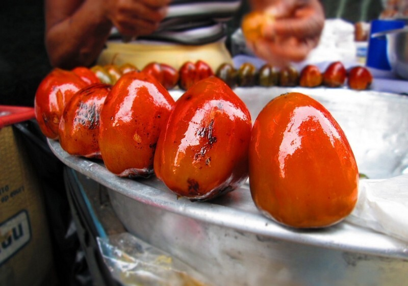
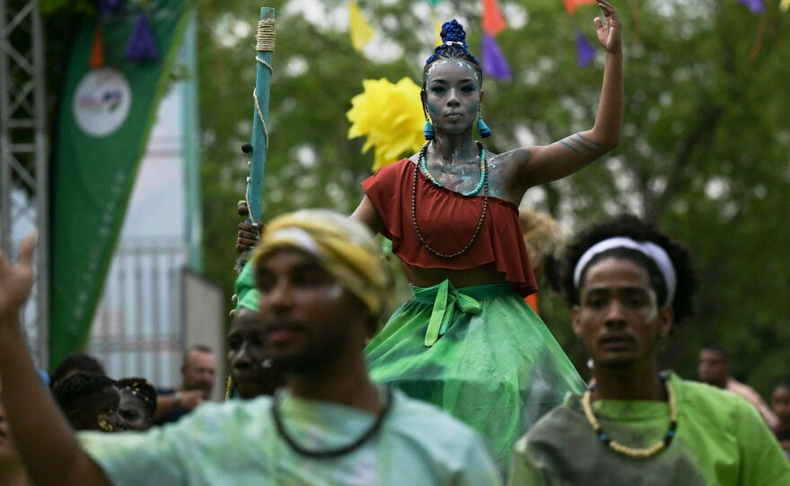

El currulao, la salsa y los cantos del Pacífico llevan huellas profundas de la tradición musical afrocolombiana.
El baile es una forma de expresión, comunidad y memoria en las tradiciones afrocolombianas del Pacífico.
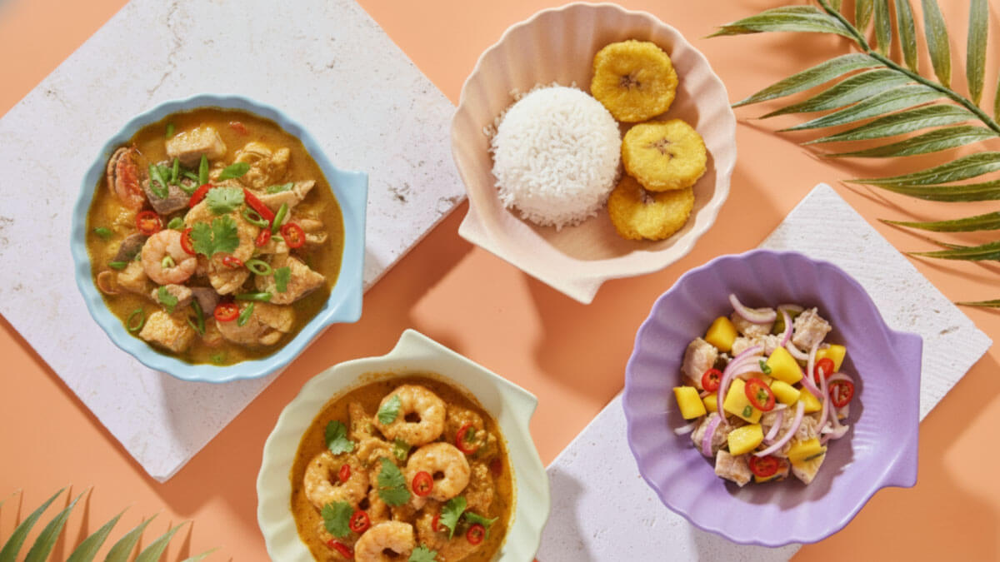
Preparaciones tradicionales del Pacífico enriquecen la variedad culinaria del Valle del Cauca.
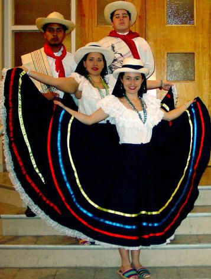
Prácticas comunitarias, rituales y saberes transmitidos de generación en generación.
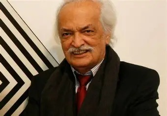
Expresiones plásticas y artesanales con identidad propia del Pacífico colombiano.
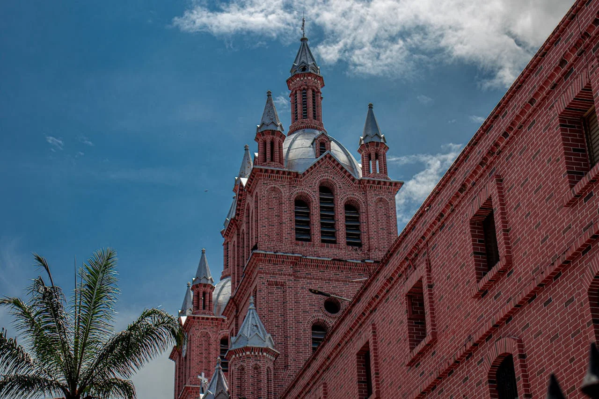
Un legado cultural que forma parte esencial del patrimonio material e inmaterial del Valle del Cauca.
Tres grandes corrientes musicales conviven en el departamento: la salsa, la música del Pacífico y la música andina.
Santiago de Cali es reconocida como un centro fundamental de la salsa en Colombia. Uno de sus máximos representantes fue Jairo Varela, fundador del Grupo Niche.
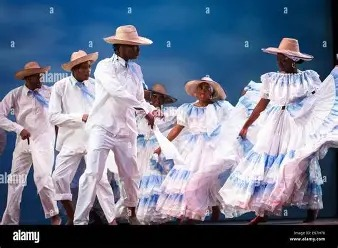
Incluye géneros como el currulao, el bunde, la juga y el aguabajo, acompañados por marimba de chonta, cununo, bombo y guasá.
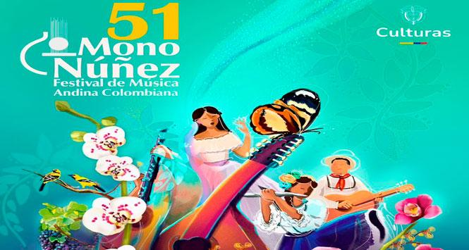
Ginebra es reconocido por su tradición de música andina colombiana, fortalecida por el Festival Mono Núñez.
Cada baile refleja una parte distinta de la identidad valluna, desde el Pacífico hasta el ambiente urbano de Cali.
Baile urbano de pareja, símbolo internacional de Cali, con giros rápidos y footwork característico.
Danza afrodescendiente del Pacífico, acompañada por marimba de chonta, cununo y guasá.

Expresión musical y dancística del Pacífico, con un carácter comunitario y ceremonial.

Presentes en municipios como Ginebra, ligados a la música andina colombiana.
Los instrumentos del Pacífico y de la música andina le dan a la cultura valluna su sonido característico.
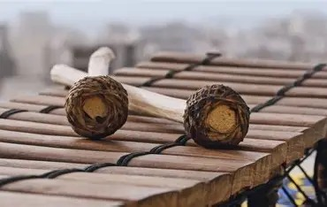
Instrumento emblemático de la música del Pacífico, elaborado con madera de chonta.
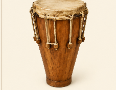
Tambor cónico de origen afrodescendiente, base rítmica del currulao.
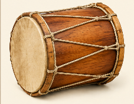
Tambor grande que marca el pulso central de la música del Pacífico.
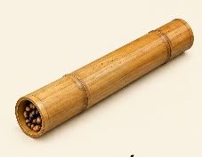
Instrumento de percusión hecho con semillas, típico de la música afropacífica.

Instrumento de cuerda propio de la música andina colombiana.

Instrumento de cuerda característico de la música andina y presente en festivales como el Mono Núñez.
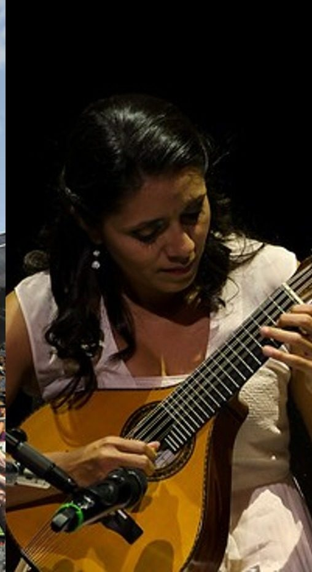
Presente tanto en la música andina como en agrupaciones populares del departamento.
La gastronomía también cuenta la historia de un pueblo: cada plato refleja su geografía, su historia y sus comunidades.
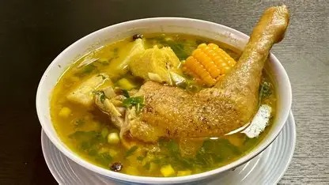
Preparación insignia del departamento, especialmente reconocida en Ginebra.

Plato tradicional a base de arroz, papa y carne de cerdo, típico del Valle.

Preparación dulce y salada a base de plátano maduro y queso.

Pan de queso característico de la panadería tradicional vallecaucana.

Preparación popular presente en la cotidianidad culinaria del departamento.

Comida tradicional para llevar, con arroz, carnes y plátano envueltos en hoja.
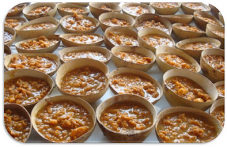
Dulce tradicional de leche, base también de las famosas brevas con manjarblanco.

Postre helado de frutas asociado especialmente con Jamundí.

Bebida tradicional a base de maíz y frutas, muy asociada con Cali.

Bebida refrescante de lulo, típica de la ciudad de Cali.
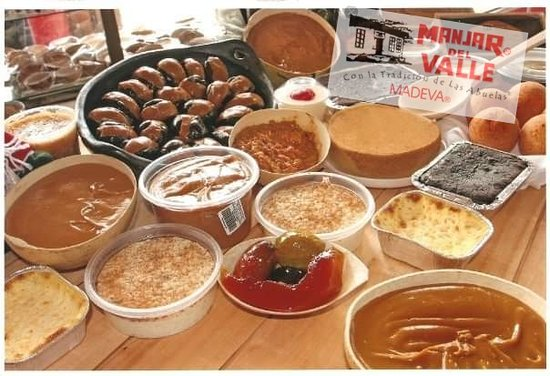
Postre clásico que combina brevas en almíbar con manjarblanco.
Recetas tradicionales con pescado, coco y productos propios de la costa pacífica.
El vestuario utilizado en representaciones folclóricas varía según la región y el contexto. No existe un único traje que represente toda la diversidad del Valle del Cauca.
Faldas amplias de colores vivos, blusas frescas, pañuelos y accesorios que acompañan los movimientos del baile, especialmente en presentaciones de salsa y folclor del Pacífico.
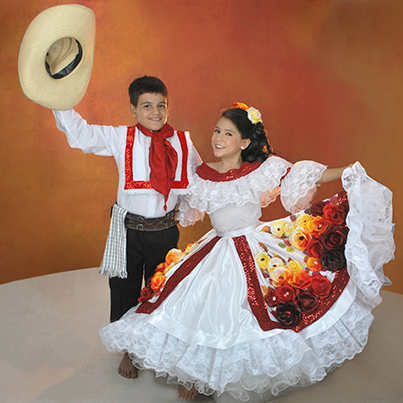
Camisas frescas, pantalones cómodos para el baile, sombreros y colores igualmente vivos que complementan la puesta en escena de las danzas tradicionales.
Es importante aclarar que estas descripciones corresponden a representaciones folclóricas generales; la vida cotidiana de las comunidades del Valle del Cauca es mucho más diversa que un único vestuario.
La diversidad de pisos térmicos, desde la costa Pacífica hasta las cordilleras, hace del Valle del Cauca un territorio de gran riqueza natural.

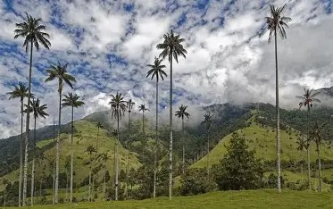
Presente en diversas zonas del departamento, símbolo del paisaje tropical.
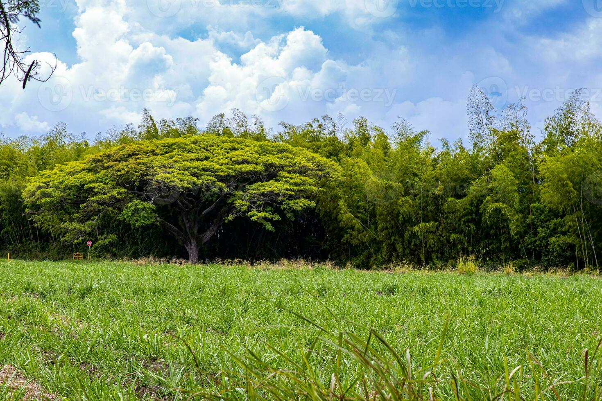
Especie vegetal representativa de la región andina colombiana.

Fruto tradicional del Pacífico, muy consumido en la región.
Cultivos importantes en la economía y el paisaje del valle geográfico.
Especies presentes en los bosques tropicales del departamento.

Gran variedad en la zona del Pacífico, especialmente cerca de Buenaventura.
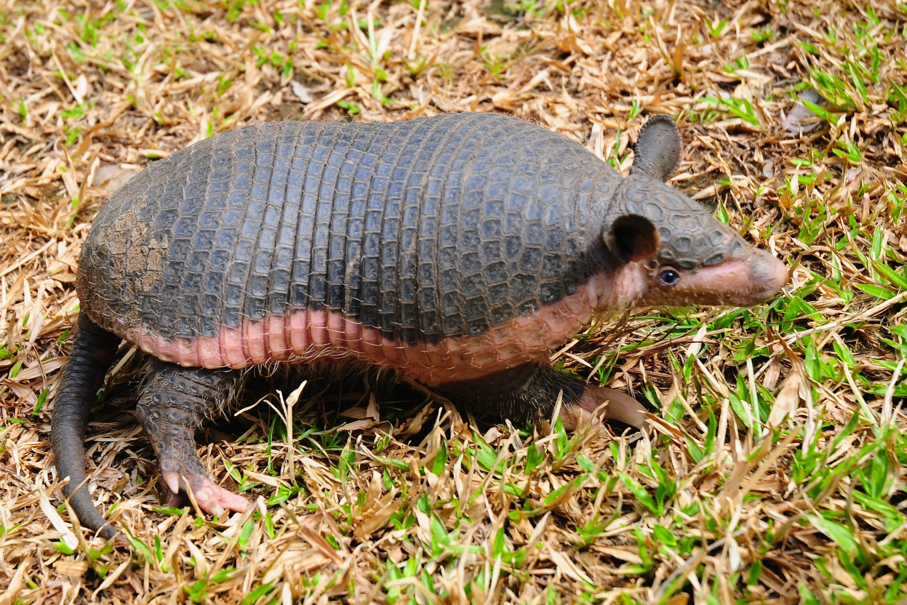
Presentes en zonas boscosas y rurales del territorio.
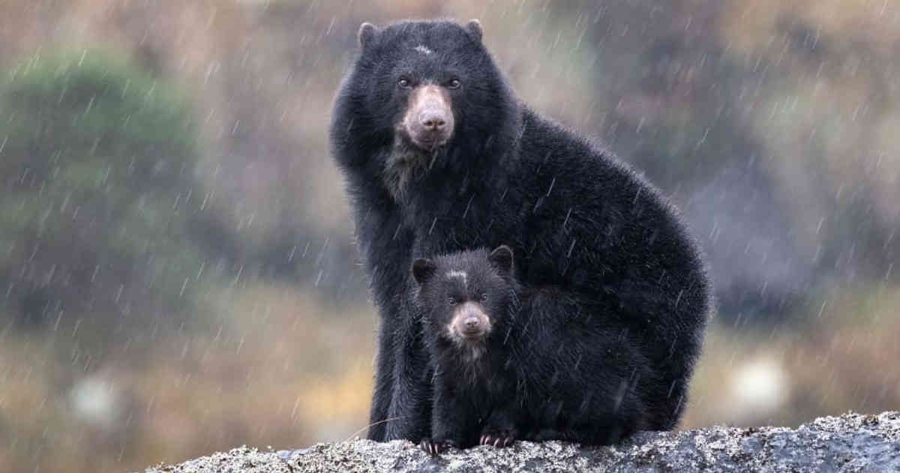
Habita en zonas montañosas de mayor altitud del departamento.
Tres grandes celebraciones sintetizan la riqueza cultural del departamento.
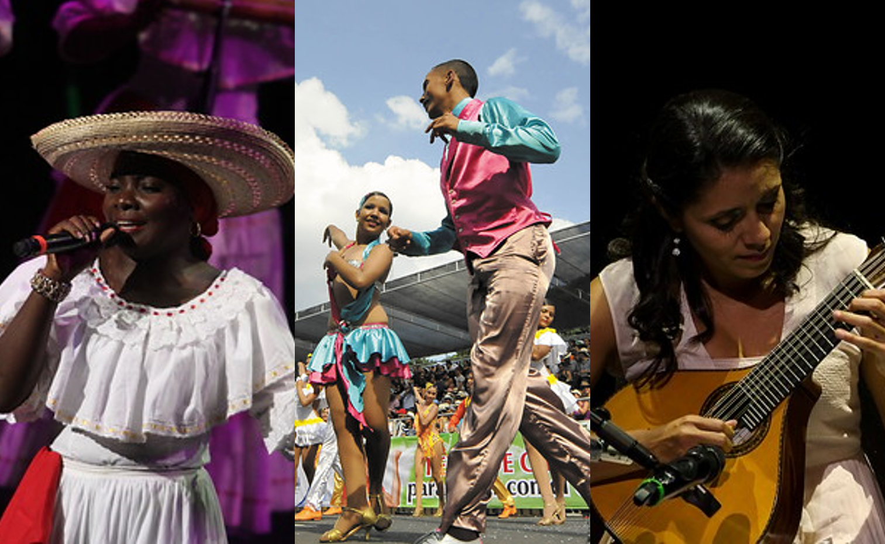
Una de las fiestas más importantes de la ciudad, estrechamente relacionada con la salsa, el baile y la cultura popular caleña.
Se realiza en Cali y reúne música, danza, gastronomía y artesanías de las comunidades del Pacífico colombiano.
Celebrado en Ginebra, es un espacio fundamental para la música andina colombiana, en homenaje a Benigno "Mono" Núñez.
Figuras que han dejado huella en la música, el arte, el cine, la literatura y la identidad cultural del departamento.
Lugares emblemáticos que muestran la diversidad geográfica y cultural del Valle del Cauca.
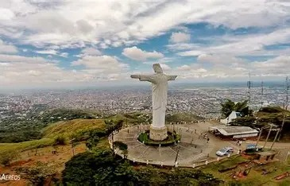
Monumento emblemático ubicado en un cerro con vista panorámica sobre Santiago de Cali.
Importante santuario religioso ubicado en el municipio de Guadalajara de Buga.
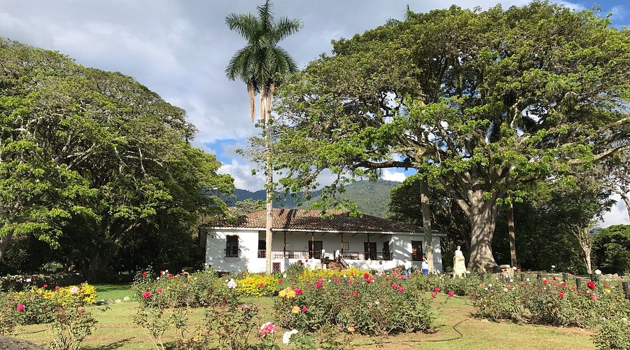
Casa histórica relacionada con la obra literaria "María" de Jorge Isaacs.

Embalse rodeado de montañas, reconocido también por su valor arqueológico.

Espacio cultural dedicado al legado artístico de Omar Rayo.

Parque natural con gran biodiversidad, cercano a la ciudad de Cali.

Reconocida por su biodiversidad marina y su importancia para las comunidades del Pacífico.
Haz clic sobre cada tarjeta para descubrir un dato curioso sobre la cultura valluna.
Una síntesis visual de lo que compone la identidad cultural del Valle del Cauca.
Fotografías organizadas por categoría. Haz clic sobre cada imagen para verla en detalle. Las fotografías suministradas para este proyecto se conservan dentro de la carpeta de imágenes y se usan también en las secciones donde corresponden.
Haz clic sobre cada palabra para ver su definición.
La cultura valluna es una muestra de la diversidad cultural de Colombia. Sus músicas, bailes, sabores, fiestas, paisajes, artistas y tradiciones son el resultado de una historia construida por diferentes comunidades.
Los aportes de las comunidades afrocolombianas son fundamentales para comprender la identidad del Valle del Cauca, especialmente en territorios como Buenaventura y en las diferentes expresiones culturales del Pacífico.
Como estudiantes del grado 11-D de la Institución Educativa Fabio Riveros, queremos reconocer esta riqueza y demostrar que conocer otras culturas nos ayuda a valorar la diversidad de nuestro país.
"Conocer, valorar y preservar nuestra cultura es una forma de mantener viva nuestra historia."
Este proyecto fue realizado por los estudiantes del grado 11-D de la Institución Educativa Fabio Riveros de Villanueva, Casanare, con motivo de la conmemoración del Día de la Afrocolombianidad.
Se recomienda consultar y completar estas referencias institucionales antes de la presentación final.
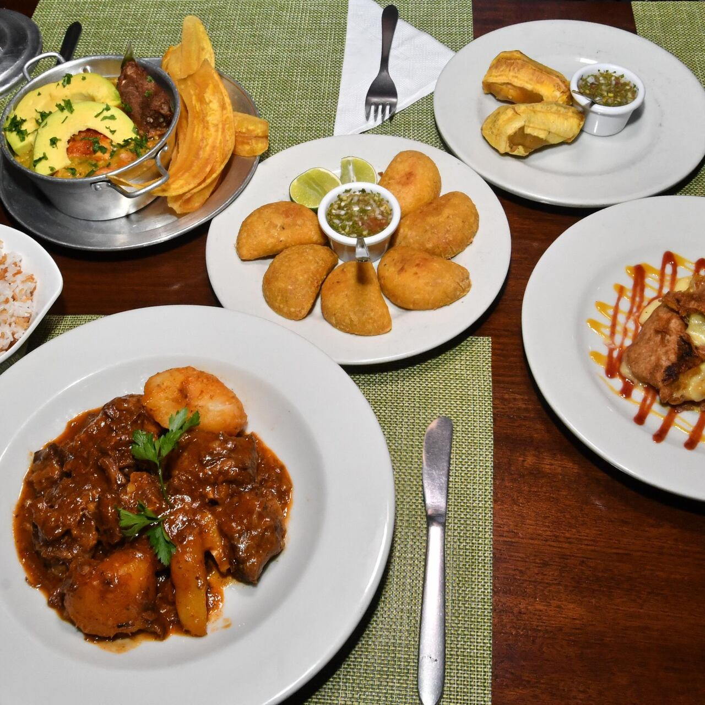